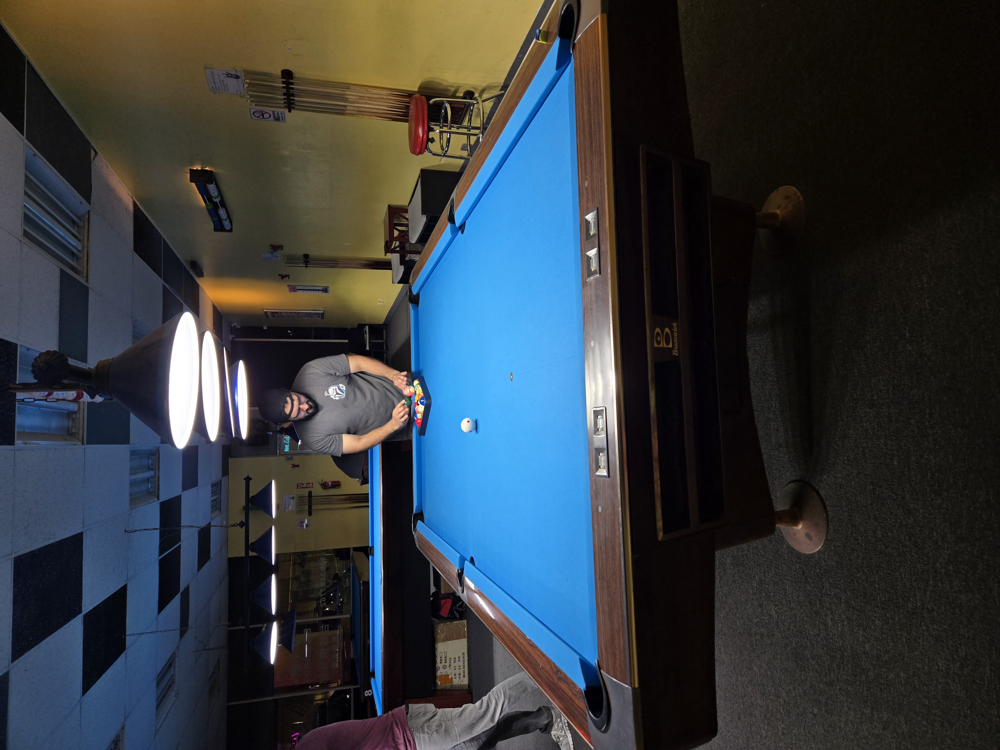
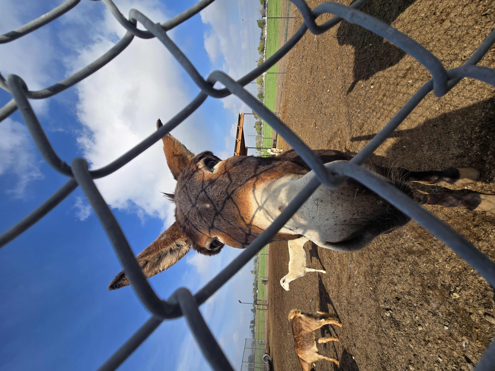
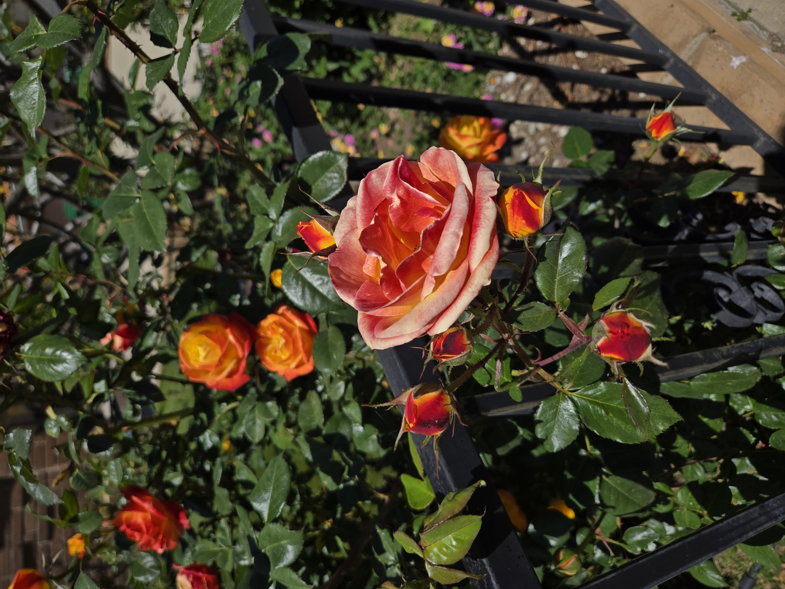
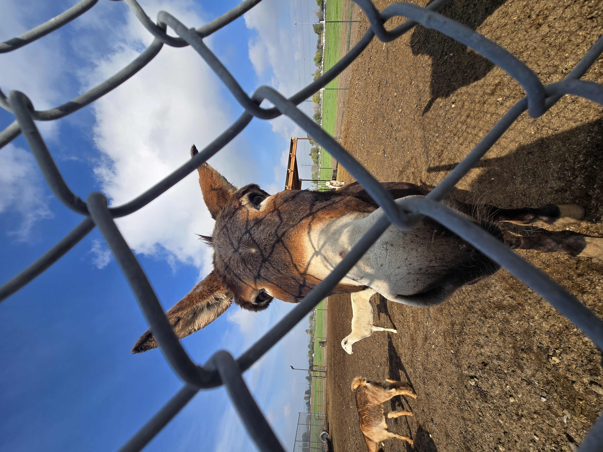
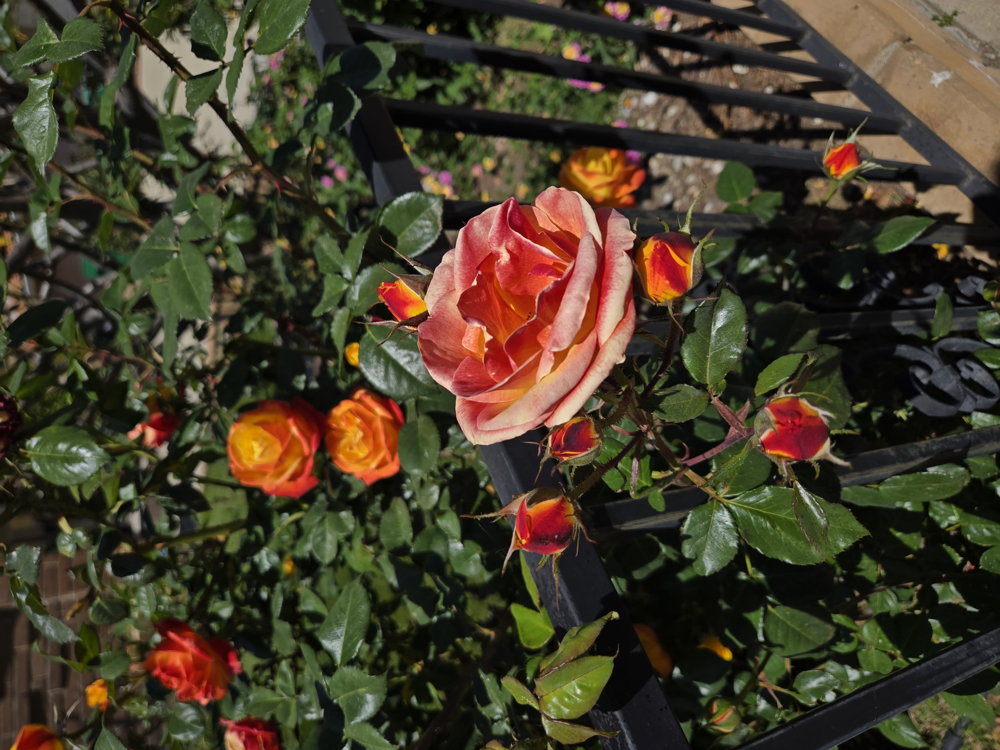

📸 Fun Times 📸



One of my favorite hobbies recently has been playing billiards. I played it a lot in high school, just for fun with friends, but I never took it seriously. Nowadays, I play at least once a week. For my birthday this year, I got gifted a cue stick for my birthday, and I love it! Its definitely an adjustment but I think I'm getting slowly getting better!
I love being able to try new food and expand my palate. I've tried such a wide variety of foods that its hard to choose my favorite dish. I was obsessed with korean food for a good amount of time, but now I've been really into Japanese food. I love that each culture has their own unique flavors and styles of cooking.
There is something so comforting and peaceful about being outside in nature. I love hearing the leaves rustle agaisnst each other in the wind. I always get amazed at how beautiful the clouds are. The smell of the air is so refreshing and helps me feel grounded. Walking around in nature reminds me to slow down and appreciate life as a whole. Its a wonderful way to destress when life gets overwhelming.
 


